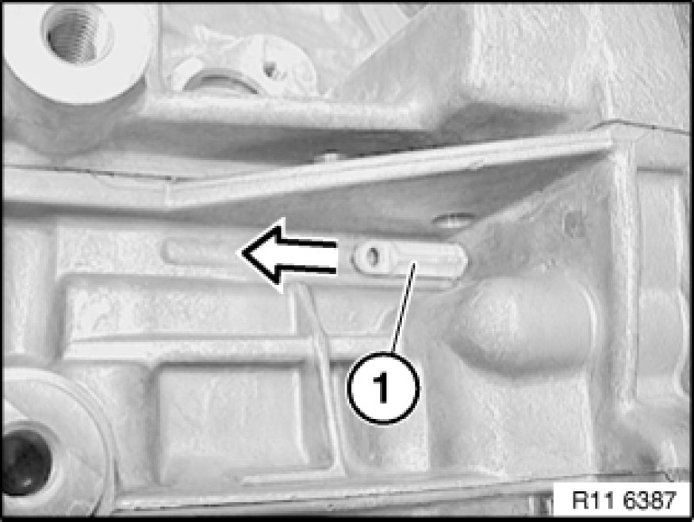
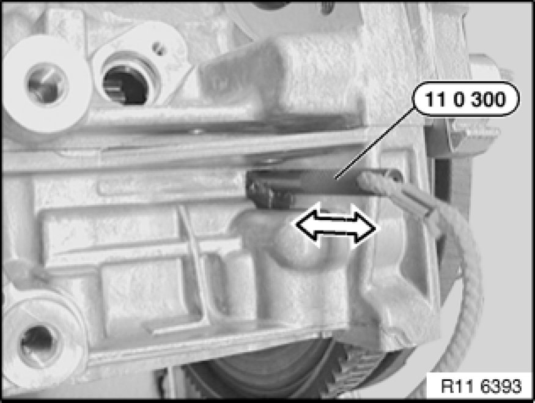
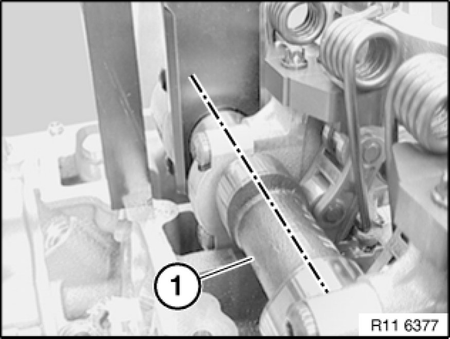
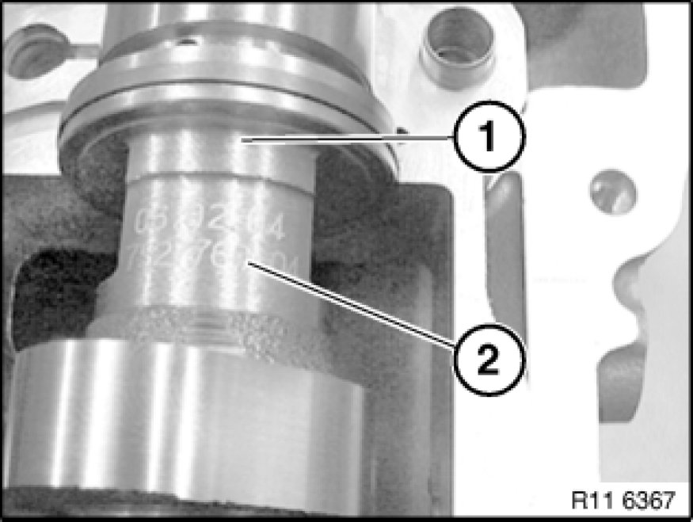
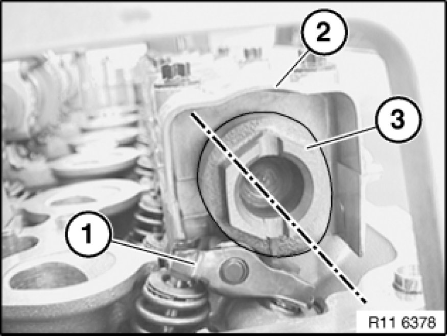

Camshaft: Testing and Inspection
11 31 005 - Checking timing of camshaft(s) (N52K)

Special tools required:
- 11 0 300
- 11 4 281
- 11 4 282
- 11 4 283

Necessary preliminary tasks:
- Remove cylinder head cover.
- Remove underbody protection.

Remove fastener (1) in direction of arrow.
Installation:
Install fastener (1) with bore facing outwards.

Rotate crankshaft at central bolt into TDC position.
Slide special tool 11 0 300 in direction of arrow into special tool bore and secure crankshaft.
Important!
On vehicles with optional extra SA205 (automatic transmission), there is a large bore for the TDC position shortly before the special tool bore. This bore can be confused with the special tool bore.
If the flywheel is secured in the correct special tool bore with special tool 11 0 300, the engine can no longer be moved at the central bolt.

With 1st cylinder in firing TDC position, cams of inlet camshaft (1) at 1st cylinder point upwards at an angle.

The timings are correct when the part numbers (2) on the inlet and exhaust camshafts (1) point upwards.

With 1st cylinder in firing TDC position, cams of exhaust camshaft (3) at 6th cylinder point downwards at an angle.
Cam follower (1) is not actuated.
Note:
When the engine is installed, the position of the exhaust camshaft (3) for the timing can only be checked with a mirror.

Secure special tool 11 4 283 to cylinder head with bolts (1).
Note:
Fit special tool 11 4 282 underneath on side of inlet camshaft.
Mount special tool 11 4 281 on inlet and exhaust camshafts.

If necessary, adjust valve timing Adjustments.
Assemble engine.